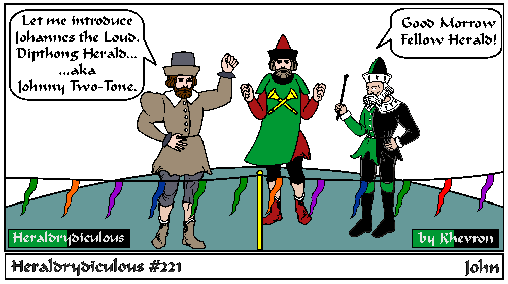

In the SCA, Herald Titles are usually associated with a branch herald position, or a Principality or Kingdom Principal Herald or deputy for a specific job. The highest Modern titles are 'Kings of Arms' (Ex. Lord Lyon King of Arms of England), in the SCA: Laurel Sovereign of Arms, Pelican and Wreath Heralds. The top ranking Kingdom Heralds are Principal Heralds, in Principalities they are 'Primary' Heralds.
Heralds with long and outstanding service can receive a permanent Heraldic Title. Dipthong is unlikely to be one of them. The titles are usually an heraldic charge or descriptor, or a place-name, alone or sometimes with a tincture or attitude. (SCA Examples: Estoile Pursuivant, Azure, Badger, Black Dragon, Chevron (Doesn't rhyme with Khevron), Orle, Pantheon, etc). European examples: Surry, Lothier, Islay, Montfort, Cyprus, Rouge Rose,
Johannes is the Latin form of the personal name that usually appears as "John" in English language contexts. It is a variant of the Greek name Ιωαννης (Ioannes / Greek, which is from the Hebrew יוֹחָנָן (Yôḥānnān, or Yochanan “‘Yahweh is gracious’”).
German variants for Johannes are Johann, Hans (diminutized to Hänschen or Hänsel, Hannes,
Danish: Jens,
Dutch: Jan,
English: Johanan, John, Johnny, and Jonny,
French is Jean,
Spanish: Juan ,
Portuguese: João,
Catalan: Joan,
Lithuanian: Jonas,
Romanian is Ion,
Italian: Giovanni,
Seán - Irish or Scots Gaelic sometimes spelled in English as Shawn or Shaun,
Estonian: Juhan, Jaan, Jaanus, Joonas and Hannes do come from the same root; Juss and Juku are the familiar names for Johannes.,
Ivan is Slavic,
American – John or Jack, Jon short for Jonathan,
Other various and copious names related to John:
"Behind the Name - WAY more variants of John
e-mail: